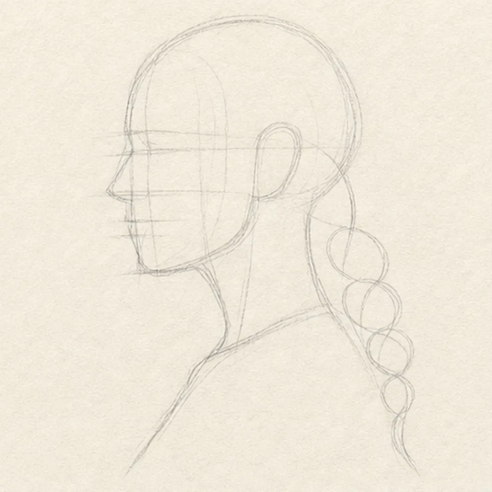
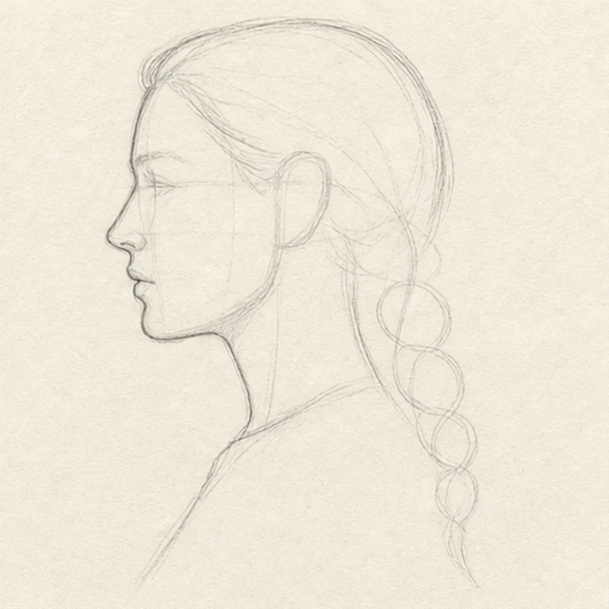
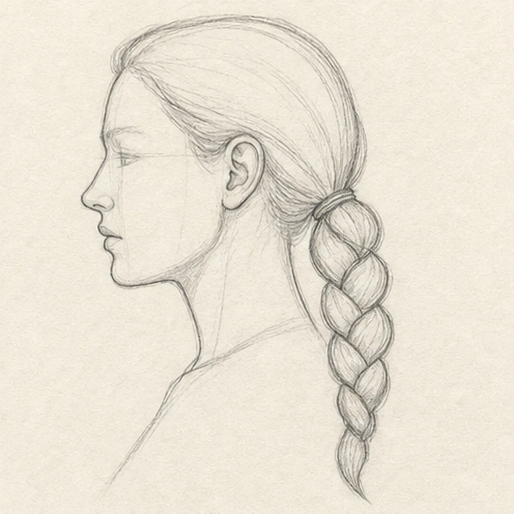
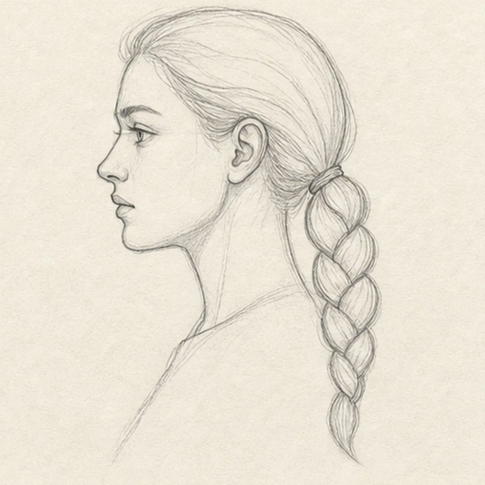
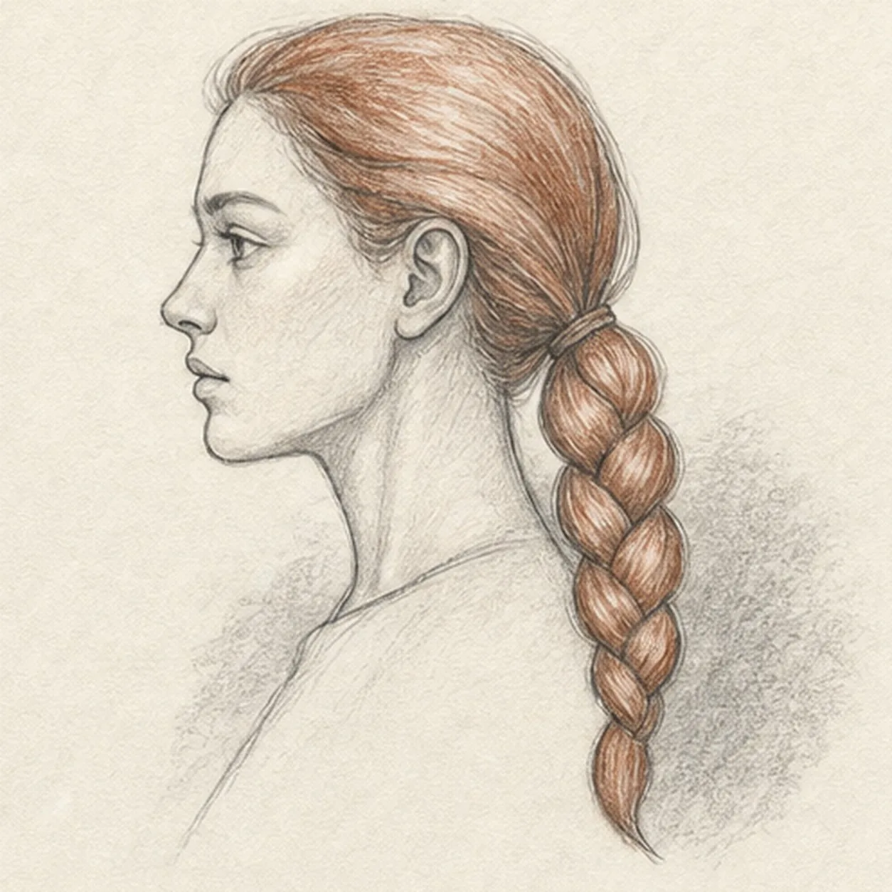

From the archive
Let's draw a side profile with a braid
Treat this as one small practice round: build the subject lightly, notice the shapes, then darken only the lines that help the finished sketch.
-
01

Place the profile and braid gesture
Draw a pale cranium oval and face plane, mark the brow, nose, mouth, and chin levels, then add the ear position, two neck lines, one shoulder line, and a curved braid route.
Sketch tip: Ghost the front edge of the face twice before touching down, then compare the empty wedge in front of the nose with the space behind the skull. Keep the braid route pale so its taper can be adjusted.
-
02

Shape the profile and hair mass
Wrap the guides with the forehead, nose, lips, chin, jaw, skull, neck, shoulder, and swept-back outer hair contour while preserving the braid route.
Sketch tip: Rotate the page for the forehead-to-nose and jaw-to-neck contours, then pull each in one relaxed pass. Let tiny asymmetries remain instead of sanding the profile into a digital curve.
-
03

Weave the braid structure
Add the visible ear, ponytail base, narrow hair tie, a continuous chain of overlapping braid sections, one tapered tip, and light placements for the eye, nostril, lips, and ear folds.
Sketch tip: Build the braid from alternating leaf-like overlaps along the existing route. Break the hidden edge of each section beneath the one above it, and check that the whole chain narrows toward the tip.
-
04

Set the facial landmarks
Clarify the existing eye, nostril, lip split, and ear folds, then add one eyebrow, the hairline, and a few large directional hair groups.
Sketch tip: Use the brow and nose guides from step one instead of placing the eye by feel. Squint at the profile after each dark mark; one strong feature is more useful than many scratchy corrections.
-
05

Add hair texture and quiet value
Pull directional strands through the established hair and braid, shade the face and neck lightly with graphite, add muted auburn pencil, and place one broken shadow behind the shoulder.
Sketch tip: Follow each hair mass with the pencil rather than scribbling across it. Leave long paper highlights through the braid, and build skin value with two light passes instead of one heavy fill.
-
06
Refine the braided portrait
Strengthen the keeper contours and clarify the established profile, facial landmarks, ear, swept hair, braid overlaps, graphite values, auburn texture, paper highlights, and broken shadow.
Sketch tip: Trace the braid from tie to tip and check that every overlap still reads, then stop before the face becomes overworked. Your hairline, nose, lips, and braid rhythm can change while keeping the same construction method.


![Handmade graphite and restrained colored-pencil sketch of one pair of vintage binoculars in a three-quarter view with exactly two forest-green tapered barrels, exactly two large blue-gray objective lenses, exactly two charcoal eyepieces, one central hinge, one ridged focus wheel, simple grip ribs, small brass hardware, one continuous warm-brown leather strap forming a broad loop beneath the binoculars, exactly one brass buckle, one visible brass side ring, open paper highlights, and one broken graphite tabletop shadow](../assets/vintage-binoculars-with-strap-finished-v1.webp)